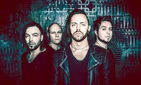

Bullet For My Valentine (abreviado BFMV) es una banda galesa de metalcore procedente de Bridgend, Gales. El grupo se constituyó originalmente bajo el nombre de "Jeff Killed John" en 1998, versionando canciones de Metallica y Nirvana. Grabaron seis canciones que nunca fueron publicadas, pero dos de ellas fueron reeditadas para posteriores trabajos del grupo.
